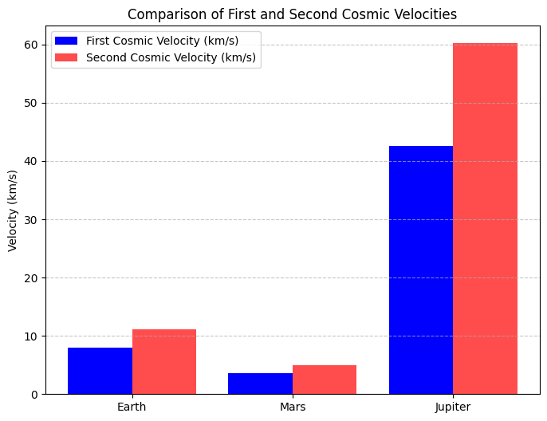

Problem 2
Escape Velocities and Cosmic Velocities
Motivation
The concept of escape velocity is crucial for understanding the conditions required to leave a celestial body's gravitational influence. Extending this concept, the first, second, and third cosmic velocities define the thresholds for orbiting, escaping, and leaving a star system. These principles underpin modern space exploration, from launching satellites to interplanetary missions.
1. Definitions of Cosmic Velocities
First Cosmic Velocity (Orbital Velocity)
- The minimum velocity required for a body to stay in a stable circular orbit around a celestial body.
- Derived using centripetal force balance with gravitational force:
$$ v_1 = \sqrt{\frac{GM}{R}} $$
Second Cosmic Velocity (Escape Velocity)
- The minimum velocity required to escape a celestial body’s gravitational field.
- Derived from energy conservation:
$$ v_2 = \sqrt{\frac{2GM}{R}} $$
Third Cosmic Velocity (Solar System Escape Velocity)
- The minimum velocity required to escape both the planet’s gravity and the Sun’s gravitational influence.
- Derived from combining the escape velocity of the planet and the escape velocity from the Sun:
$$ v_3 = \sqrt{v_{\text{escape, planet}}^2 + v_{\text{escape, sun}}^2} $$
2. Mathematical Derivations and Parameters Affecting These Velocities
- Gravitational constant (G): \( 6.674 \times 10^{-11} \, \text{m}^3\text{kg}^{-1}\text{s}^{-2} \)
- Mass of celestial body (M)
- Radius of celestial body (R)
- For third cosmic velocity, Sun's mass and distance are also considered.
3. Python Code to Calculate and Visualize Cosmic Velocities
import numpy as np
import matplotlib.pyplot as plt
# Constants
G = 6.674 * 10**-11 # Gravitational constant (m^3 kg^-1 s^-2)
# Celestial body data (mass in kg, radius in m)
bodies = {
"Earth": {"mass": 5.972e24, "radius": 6.371e6},
"Mars": {"mass": 6.417e23, "radius": 3.389e6},
"Jupiter": {"mass": 1.898e27, "radius": 6.9911e7}
}
# Compute velocities
velocities = {}
for body, data in bodies.items():
M = data["mass"]
R = data["radius"]
v1 = np.sqrt(G * M / R) # First cosmic velocity
v2 = np.sqrt(2 * G * M / R) # Second cosmic velocity
velocities[body] = (v1, v2)
# Visualization
fig, ax = plt.subplots(figsize=(8, 6))
x_labels = list(velocities.keys())
v1_vals = [velocities[body][0] for body in x_labels]
v2_vals = [velocities[body][1] for body in x_labels]
ax.bar(x_labels, v1_vals, label="First Cosmic Velocity (km/s)", color="blue")
ax.bar(x_labels, v2_vals, label="Second Cosmic Velocity (km/s)", color="red", alpha=0.7)
ax.set_ylabel("Velocity (m/s)")
ax.set_title("First and Second Cosmic Velocities for Celestial Bodies")
ax.legend()
plt.show()

4. Discussion on Space Exploration
- Satellites: Launched at first cosmic velocity to remain in orbit.
- Interplanetary Missions: Rockets must reach at least second cosmic velocity to escape Earth's gravity.
- Interstellar Travel: Requires surpassing the third cosmic velocity to leave the Sun’s gravitational influence.